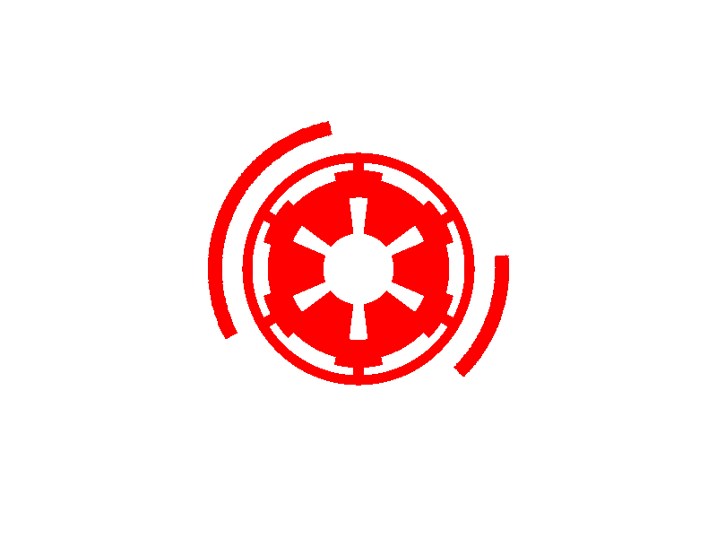

Recherches favorites
Cliquer sur une recherche favorite ci-dessus pour relancer celle-ci :
Cette page permet de rechercher des information sur les personnages Star Wars via l'API
publique de swapi.dev.
Saisir le nom d'un personnage, ... pour rechercher les informations correspondantes, et enregistrer vos
recherches favorites pour les retrouver facilement.
Cliquer sur une recherche favorite ci-dessus pour relancer celle-ci :